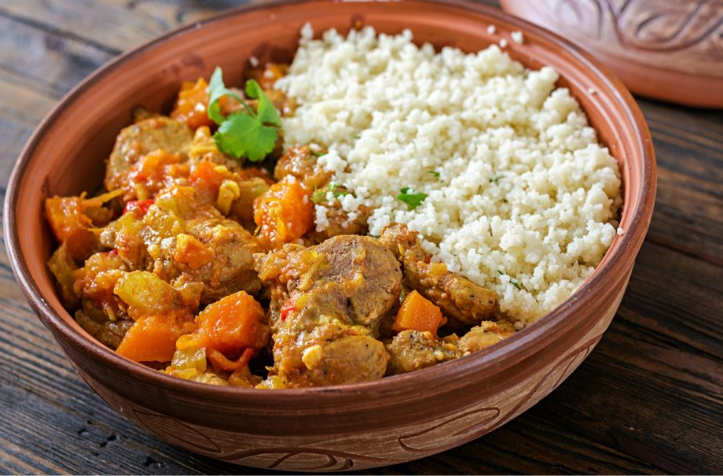

Lamb and apricot stew with couscous recipe

Serves:
5-a-day:
Prep:
Cooking:
Skill:
4
1
15 Min
1Hr 15 Min
Medium
Use up leftover lamb in this fruity Mediterranean stew with chickpeas, aduki beans, apricots and almonds. Delicious with herby couscous.
Ingredients
For The Lamb And Apricot Stew
-
2tbsp extra virgin olive oil
- Two garlic cloves, crushed
- 300g lean lamb (neck fillet or leg)
- 1 x 400g can plum tomatoes
- 1 x 390g can fried onions
- 1 x 300g can apricots, drained
- 1 x 400g can chickpeas, drained
- 1 x 400g can aduki beans, drained
- 1 pinch salt and fresh ground black pepper
For The Couscous
- 1 x 480g jar roasted red peppers, cut into thin strips
- 1tbsp fresh parsley, roughly chopped
- Zest and juice of 1 lemon
- 1tbsp fresh mint, roughly chopped
- Salt and ground black pepper
Method
- Heat the oil in a heavy based saucepan, add the cumin seeds and fry for 2 mins. Add the cinnamon, easy onions and garlic, then stir and cook gently for 5 mins.
- Add the lamb and cook until browned.
- Add the tomatoes, drained apricots, chickpeas, aduki beans, tomato puree and enough stock to just cover the meat. Season with salt and freshly ground pepper. Bring to the boil, cover and simmer on a low heat for 1 hr (or less if using leftover lamb), or until the lamb is tender. Stir every 20 mins, adding a little more stock if necessary.
- To make the couscous, heat a frying pan, add the flaked almonds and dry-fry, tossing all the time until light brown. Note: don’t leave unattended as the almonds will burn very easily.
- Prepare the couscous, as per the instructions. Transfer to a large dish and fluff up with a fork. Add the peppers, herbs, lemon juice and seasoning, stir well, transfer to a serving dish and sprinkle over the flaked almonds.